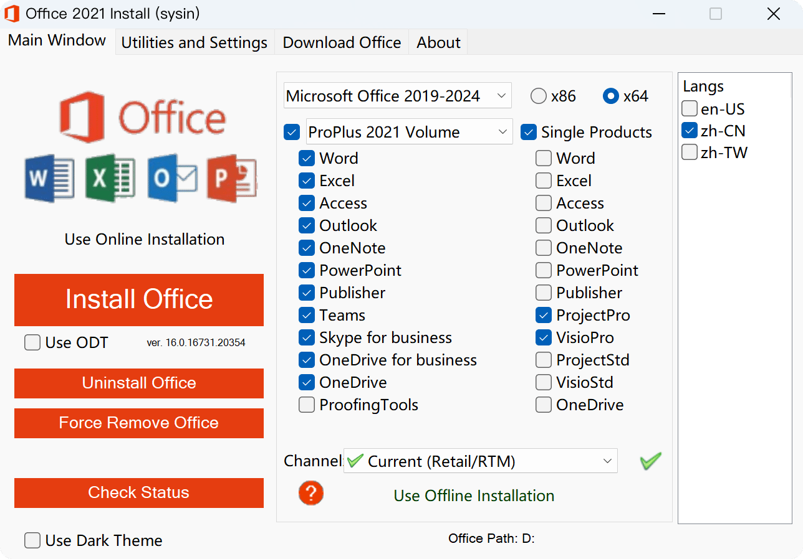

请访问原文链接：Microsoft Office 2021 正式版 Retail VL 中英文版 iso 下载 查看最新版。原创作品，转载请保留出处。
作者主页：sysin.org
Office LTSC 2021 已于 9 月 16 日发布正式版！
Office LTSC 2021 概述
Office LTSC 2021 是最新版本的 Microsoft 生产力软件，通过批量许可协议提供给组织。
重要
Office LTSC 2021 独立于 Office 计划或 Microsoft 365 (提供 Office 365) 版本。例如，如果已部署以前 Microsoft 365 企业应用版 (名为 Office 365 专业增强版) 的用户，则不需要使用 Office LTSC 2021。你已拥有 LTSC Office 2021 中包含的所有功能，以及 LTSC 2021 中不包含的 Office 功能。
Office LTSC 2021 可供企业管理员下载并部署到其组织的用户。以下批量许可 Office 产品适用于运行以下 Windows：
- Office LTSC 专业增强版 2021
- Office LTSC 标准版 2021
- Project Professional 2021
- Project Standard 2021
- Visio LTSC Professional 2021
- Visio LTSC Standard 2021
这些 Office 产品使用即点即用，而不是使用 Windows 安装程序 (MSI) 作为安装技术 (sysin)。但是，激活这些 Office 产品的方式仍然相同，例如，通过使用密钥管理服务 (KMS)。
Office LTSC 2021 在运行 Windows 10 或 Windows 11 的设备上受支持。有关详细信息，请参阅 Microsoft 365和 Office 的系统要求。
对于运行 macOS 的设备，Office LTSC 标准版适用于 Mac 2021 的设备可供批量许可的客户使用。有关详细信息，请参阅 Office for Mac 部署指南。
LTSC 2021 Office 发生了哪些更改？
与 2019 年 Office 的批量许可版本相比，LTSC 2021 中的更改 Office 如下。
提示
如果要从 Office 2016 迁移到 Office LTSC 2021，还应查看 IT 专业人员) 的 Office 2019 (概述中记录的更改。Office 2016 和 Office LTSC 2021 之间的最重要的区别是安装技术从 Windows Installer (MSI) 更改为即点即用。
隐私相关的策略设置
使用组策略时，可以使用以下策略设置：
- 配置由 Office 发送给 Microsoft 的客户端软件诊断数据的级别
- 允许在 Office 中使用分析内容的连接体验
- 允许在 Office 中使用下载在线内容的连接体验
- 允许在 Office 中使用连接体验
这些策略设置位于组策略管理工具中的 “用户配置\策略\管理模板\Microsoft Office 2016\Privacy\Trust Center” 下。
备注
LTSC 2021 中也提供了 “允许在 Office 中使用其他可选连接体验” Office 设置。但这不被视为更改，因为该策略设置已可用于 2019 年 Office 版本。
有关详细信息，请参阅使用 策略设置管理隐私控件。即使本文并非专门针对 Office LTSC 2021，本文中涵盖的信息也适用于 Office LTSC 2021。
支持持续时间
Office LTSC 2021（包括 Project 和 Visio）具有五年主流支持 (sysin)。5 年主流支持结束后，这些产品将没有任何扩展支持可用。有关详细信息，请参阅 Microsoft 生命周期策略。
Microsoft Teams
Office LTSC 2021 Teams 客户端应用，但仅包括免费或探索服务，Microsoft Teams。
免费版本的 Microsoft Teams 适用于没有 Azure AD 帐户 Azure Active Directory (用户) 帐户。有关详细信息，请参阅管理免费 版本的Microsoft Teams。
探索体验适用于组织中具有现有 Azure AD 帐户但没有许可使用 azure AD Teams。有关详细信息，请参阅管理 Microsoft Teams 探索许可证。
有关使用 Office LTSC 2021 安装 Teams 客户端应用 Microsoft Teams，请参阅 Office LTSC 2021 中的步骤。
语言支持
Office LTSC 2021 添加了对以下三种语言的支持：
- 英国 (英语) ，en-gb
- 加拿大 (法语) ，fr-ca
- 西班牙语 (墨西哥) ，es-mx
OpenDocument 格式 1.3
OFFICE LTSC 2021 Excel 中的 Word、PowerPoint 和 (支持) ODF 1.3。有关详细信息，请参阅 Office现在支持 OpenDocument 格式 1.3。
Office 加载项
LTSC 2021 Office 其他几个加载项 JavaScript API Office 可用。其中包括以下要求集。
- 产品要求集：
- 常见的 API 要求集：
- CustomFunctionsRuntime 1.3 (Excel)
- DialogApi 1.2 (Excel、PowerPoint、Word)
- IdentityAPI 1.3 (Excel、Outlook、PowerPoint、Word)
- ImageCoercion 1.2 (Excel、PowerPoint、Word)
- OpenBrowserWindowApi 1.1 (Excel、Outlook、PowerPoint、Word)
- 功能区 Api 1.1 (Excel)
- SharedRuntime 1.1 (Excel)
Office 现在，Windows 上的加载项 Microsoft Edge WebView2。有关详细信息，请参阅 Office 加载项使用的浏览器。
Office 遥测仪表板
Office LTSC 2021 中不再包含 Office 遥测仪表板 Office。
OneDrive for Business (Groove) 客户端
OneDrive for Business (Groove) 客户端不再包含在安装 Office LTSC 2021 中 Office。
Excel 中的 Power View
Power View 不适用于 LTSC 2021 Excel 的 Office 版本。Power BI 是视觉数据浏览和报告的建议工具。有关详细信息，请参阅 Power View中的 Excel 路线图。
LTSC 2021 中的 Office 是什么？
可以使用相同的软件分发工具（如 Microsoft Endpoint Configuration Manager）来部署和更新当前用于部署和更新 Office 2019 批量许可版本的 Office LTSC 2021。
此外，激活批量许可版本的 Office 保持不变。例如，使用 MAK 密钥管理服务 (KMS) 或多个激活密钥 (MAK)。有关详细信息，请参阅 批量激活 Office。
Office LTSC 2021 的主要版本是 16.0，与 Office 2019 (和 Office 2016) 批量许可版本相同。从 2019 年 1 月 20 日升级时，拥有相同的主版本 Office 优势：
- 现有组策略设置将继续工作，因为这些设置仍保存在以下注册表位置：
- HKEY_LOCAL_MACHINE\SOFTWARE\Policies\Microsoft\Office\16.0
- HKEY_CURRENT_USER\SOFTWARE\Policies\Microsoft\Office\16.0
- 其他引用 16.0 的注册表位置和设置信息仍适用。
- 与 Office 2019 批量许可版本兼容的加载项和其他扩展解决方案最有可能与 Office LTSC 2021 兼容，或者只需进行少量的测试。
LTSC 2021 Office 哪些新功能？
有关 LTSC 2021 Office 新功能的信息，请参阅以下文章：
- 2021 年 Office 新增功能
- Access 2021 中的新增功能
- 2021 年 Excel 新增功能
- 2021 年 Outlook 新增功能
- 2021 年 PowerPoint 中的新增功能
- 2021 年 Visio Professional 新增功能
- Word 2021 中的新增功能
请记住，Office LTSC 2021 仅包括一些（但并非所有）功能，这些功能在 Office 版本中可用，Microsoft 365 (或 Office 365) 计划。
Office LTSC 2021 在已发布后不会收到任何新功能。如果要获取新的 Office 功能，应考虑迁移到包含 Microsoft 365 (或 Office 365) 的计划 Office。许多企业计划包括 Microsoft 365 企业应用版，其中包括与 Office 相同的 Office LTSC 专业增强版 2021。有关详细信息，请参阅 比较 Microsoft 365 计划和比较 Office 365 计划。
若要获取桌面版本的 Project 和 Visio 的不断功能更新，应考虑迁移到这些产品的订阅计划。有关详细信息，请参阅 Project 计划 3/Project 计划 5 和 Visio 计划 2。
备注
LTSC 2021 Teams 的 Office 客户端应用将继续接收新功能。应用的更新过程 Teams 其他应用（如 Word 和 Excel）的更新过程 Office。有关详细信息，请参阅 Teams 更新流程。
如何升级到 LTSC 2021 Office？
建议在将现有版本 Office LTSC 2021 Office 卸载。在安装 Office LTSC 2021 过程中，可以从设备中删除使用 Windows Installer (MSI) 安装大多数 Office 产品，例如 Office 2016 或 Office 2013。有关详细信息，请参阅 在安装 LTSC 2021 Office 删除Office 版本。
有关 LTSC 2021 Office 的其他信息
- Office LTSC 专业增强版 2021 Access、Excel、OneNote、Outlook、PowerPoint、Publisher、Skype for Business、Teams 和 Word。
- 访问 Publisher 不可用于运行 macOS 的设备。
- Office LTSC 2021 包括 OneNote 桌面应用。有关详细信息，请参阅 OneNote 部署指南。
- Office LTSC 2021 提供 32 位和 64 位版本。我们建议在具有 4 GB 或 4 GB 以上内存的设备上使用 64 位。但是，你应该评估应用程序兼容性以及可能需要使用 32 位版本的其他因素。有关详细信息，请参阅 选择 64 位或 32 位版本的 Office。
- 下载安装文件后，安装 LTSC 2021 Office Internet 连接。进行 MAK 激活需要 Internet 连接，但不需要建立 KMS 连接。激活后，使用 LTSC 2021 Office Internet 连接。
- LTSC 代表长期服务通道。
下载地址
Office LTSC 2021 Pro Plus + Project Pro 2021 + Visio Pro 2021 Version 2312 (Build 17126.20132) x64
- 百度网盘链接：https://pan.baidu.com/s/1YY3qtl8P0aSleYTRBuZ62Q?pwd=1q9d
包含简体中文、繁体中文和英文版（默认勾选 zh-CN）。

其他版本：
-
使用 Office 部署工具 构建自定义镜像。
-
批量许可（VL）版本 ISO 镜像：
详见：如何创建 Office LTSC 2021 VL (批量许可) 版本的安装 ISO
for macOS：Microsoft Office LTSC 2021 for Mac (Microsoft 365) 16.92 Universal
新版链接：
更多：Windows 下载汇总

文章用于推荐和分享优秀的软件产品及其相关技术，所有软件默认提供官方原版（免费版或试用版），免费分享。对于部分产品笔者加入了自己的理解和分析，方便学习和研究使用。任何内容若侵犯了您的版权，请联系作者删除。如果您喜欢这篇文章或者觉得它对您有所帮助，或者发现有不当之处，欢迎您发表评论，也欢迎您分享这个网站，或者赞赏一下作者，谢谢！
 支付宝赞赏
支付宝赞赏
 微信赞赏
微信赞赏
赞赏一下